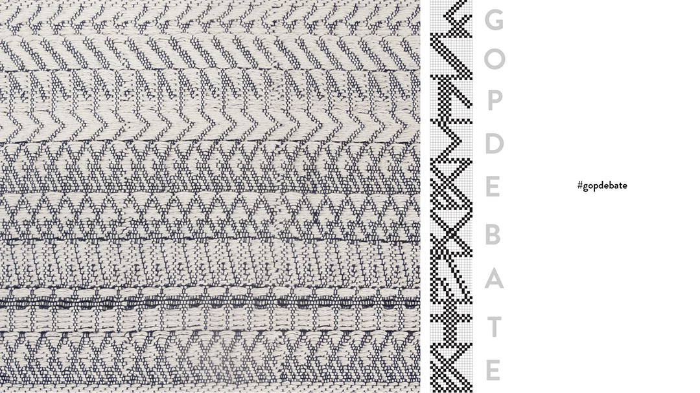

Trame Virtuali
Este proyecto es una interpretación contemporánea de la alfombra tradicional como un medio para narrar historias. Desde los primeros tiempos, las alfombras representaban símbolos que representaban leyendas y culturas. Adoptaron el carácter de la alfombra como un registro cultural y lo actualizaron con el contenido actual de nuestra sociedad globalmente interconectada.
Los temas populares cada hora de los hashtags de Twitter se recogen automáticamente y se procesan a través de códigos informáticos en patrones de tejido. Para la transformación de las historias en la textura, se creó un lenguaje en el que cada letra del alfabeto corresponde a una composición textil. Los caracteres de cada hashtag se traducen luego en diagramas de tejido y se presentan en orden cronológico. A medida que las historias continúan contándose en el mundo virtual, también lo hace el tejido de la alfombra digital en el sitio web del proyecto. La construcción de la tela es dictada por estas conversaciones virtuales, que promueve una interacción entre los dos tipos de "trame" - una palabra italiana que puede significar o bien tramas o texturas.

Las historias virtuales se vuelven materiales una vez que el diseño generado automáticamente se procesa con el telar semi-automatizado. La alfombra real sólo puede ser un fragmento de la digital, al igual que la inhibición de la existencia física en oposición a la condición ilimitada del mundo virtual. La táctilidad y astucia de la tela tejida contrasta con el carácter perfecto y pulido del codificado, digital. ¿No es esto también la dualidad que encontramos cuando se trata de la distinción entre nuestras realidades reales y virtuales?
DISEÑADORAS
Sofia Angelopoulou
sofiangelopoulou@gmail.com
Maria Fernanda Duarte
to.maria.duarte@gmail.com